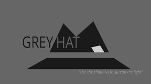

A grey hat programmer (additionally spelled grey hat programmer) is somebody who might abuse moral norms or standards, however without the malignant purpose attributed to dark cap programmers. Grey hat programmers might participate in rehearses that appear to be not exactly totally above board, yet are frequently working for the benefit of everyone. Grey hat programmers address the center ground between white cap programmers, who work for the benefit of those keeping up with secure frameworks, and dark cap programmers who act vindictively to abuse weaknesses in frameworks.
Do not have mallicious intensions
Try to get Information For their own findings
May OR May Not Be Legal
What are grey hat hackers?
As in life, there are grey areas in the hacking world that are neither black nor white. Grey hat hackers operate somewhere between the extremes of their black hat and white hat counterparts. They don't necessarily want to cause pain or steal from their victims, but they often hack into their targets' networks to look for vulnerabilities in a system without the owners' permission or knowledge
And if they find these vulnerabilities? They will report them to the owner, but they often request a fee to fix the issues they find. If the owner does not respond or comply, sometimes these hackers will post the newly found vulnerability online for the world to see
These types of hackers may not be inherently malicious; they're just looking to get something out of their discoveries. Usually, grey hat hackers will not exploit the vulnerabilities they find. They won't steal and leak the financial information that retailers have collected on their customers, for instance. However, this type of hacking is still considered illegal because the hackers don't receive permission from the owners before attempting to attack their systems.
What are grey hat hackers doing?
When a grey hat hacker successfully gains illegal access to a system or network, they may suggest to the system administrator that they or one of their friends be hired to fix the problem for a fee. However, this practice has been declining due to the increasing willingness of businesses to prosecute.
Some companies use bug bounty programs to encourage grey hat hackers to report their findings. In these cases, organizations provide a bounty to avoid the broader risk of having the hacker exploit the vulnerability for their own gain. But this is not always the case, so getting the company's permission is the only way to guarantee that a hacker will be within the law.
Sometimes, if organizations do not respond promptly or do not comply, grey hat hackers may become black hats by posting the point of exploitation on the internet or even exploiting the vulnerability themselves.
Why are grey hat hackers needed?
In spite of the worries, the aptitude of grey hats can't be overlooked in such an ability short market. The lack in network protection abilities is very much revealed, leaving organizations presented to the activities of dark caps. McAfee's 'Hacking the Skills Shortage' refered to that 82% of respondents were influenced by a network safety lack, while an investigation by Indeed uncovered that digital protection work opening has ascended by almost a third in two years, bringing about the abilities hole ascending by 5% in the UK. Network protection Ventures predicts that worldwide spend on online protection will surpass $1 trillion over the course of the following five years and evaluations that there will be 1.5 million occupation opening by 2019. With a particularly extreme divergence among market interest, arraigning dark too as dark caps could have genuine repercussions for the network protection market.
Why are grey hat hackers useful?
As we've effectively said, dark cap hacking is unlawful, paying little heed to the goal. In case there isn't authorization from the objective to discover weaknesses, attempting to break an organization's protection from the law. So a grey hat programmer ought to hope to be rebuffed by unveiling a weakness to an organization.
Notwithstanding, a few organizations utilize their bug abundance projects to urge dark cap programmers to report their discoveries, and will give the abundance to stay away from the more extensive danger of having the programmer utilize the weakness for their own benefit. However, this is moderately uncommon, so getting the organization's authorization
